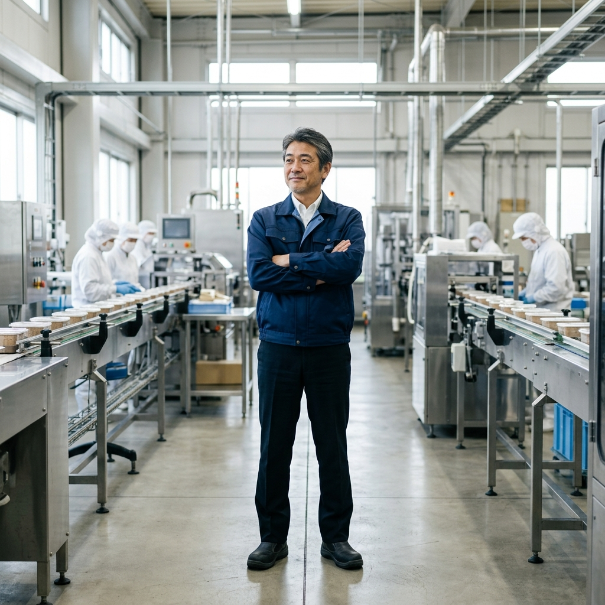
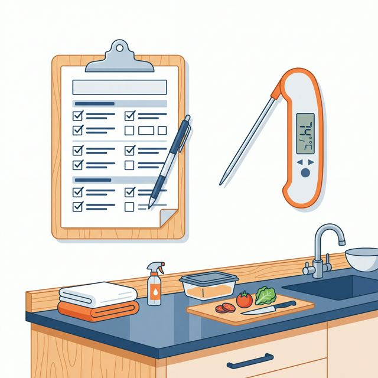

HACCP義務化、中小企業は何からすればいい？現役コンサルが解説

「HACCP（ハサップ）義務化」と聞いて、業界団体の手引書をダウンロードし、「とりあえず『HACCPの考え方を取り入れた衛生管理（旧 基準B）』をやればいいんだな」と安心していませんか？
食品安全のコンサルティングを行っていると、経営者様からこうしたお声をよく伺います。しかし、現役の監査員の視点から言うと、その認識のままだと、今後のBtoBビジネスにおいて取引先からの信用を失うリスクを抱えることになります。
本コラムでは、法律上の最低ラインと、実際の商取引（二者監査）で求められるレベルの「大きな乖離」について解説し、中小企業が本当に信用を守り、取引を拡大するために「何から始めるべきか」をお伝えします。
1. 警告：「HACCPの考え方を取り入れた衛生管理」は時代遅れ？
食品衛生法上、小規模事業者向けの「HACCPの考え方を取り入れた衛生管理」を行っていれば、法律違反にはならず、保健所の許可も下ります。これは紛れもない事実です。
しかし、スーパーやコンビニ、大手食品メーカーなどが取引先（あなた）の工場をチェックする「二者監査（取引先監査）」の現場では、このレベルの対応はすでに「不十分・時代遅れ」と見なされるのが現実です。
バイヤーは自社のブランドを守るため、「手引書通りにやっているか」ではなく、「あなたの工場内の危害（ハザード）を理解し、それを科学的根拠に基づいて防ぎきれる『システム（仕組み）』があるか？」を厳しく問います。手引書の丸写しでは、安全性の根拠を論理的に説明できず、監査での指摘事項が増え、取引先からの信用を大きく損なう原因となっています。
2. 中小企業が「本当にやるべき」実践的3ステップ
「では、中小工場でも大企業のような分厚い専門書類を作らなければいけないのか？」というと、そうではありません。現場の負担を抑えつつ、監査員や取引先に「うちの製品は安全です」と胸を張って説明できる体制（JFS-B規格等のレベル）を作るためのステップを紹介します。
ステップ①：手引書の「丸写し」をやめ、自社のハザード（危害要因）を分析する
最も重要な第一歩です。雛形をそのまま使うのではなく、「自社の工場内で、どの工程に、どんな危害（金属混入、食中毒菌の増殖など）が潜んでいるか」を自分の言葉で洗い出します。これがすべての根拠となります。「なぜその温度・時間で加熱するのか（CCPの根拠）」を監査員に説明できるようにしておくことが、二者監査で信頼を勝ち取る最大のカギです。
実は、ハザード（危害要因）分析は、お客様の信用を勝ち取るための「自己アピール」のようなものです。「私たちの組織は、ここまでの管理を行っています」と具体的に示すための書類であり、管理手段としてどのようなことを実施しているかを明確にすることができます。ハザード分析を適当にやっている会社と、しっかりと作り込んでいる会社では、監査員に与える印象がまるで違います。二者監査の場で「この会社はきちんと管理している」と思ってもらえるかどうかは、まさにこのハザード分析の質にかかっているのです。

ステップ②：現場が迷わない「最小限のルール」に絞り込み、確実な記録を残す
網羅的に管理しようとして項目を増やしすぎると、現場は疲弊し「チェックのためのチェック」が始まります。HACCPの肝（CCP：重要管理点）と、それを支える土台（5Sや手洗い等のPRP：前提条件プログラム）を明確に分け、「ここだけは絶対に外せない」という項目に限界まで絞り込んで、確実に記録が残る仕組みを作ります。
ステップ③：記録を「検証体制」に乗せる
スタッフが記録をつけて終わり、ではありません。責任者が「ルール通りに記録されているか」「異常があったとき、正しい処置（是正処置）が行われたか」を後から確認（検証）し、サインをする。この「管理のサイクル」が回っていることこそが、監査員が最も安心するポイントです。
3. 脱・時代遅れ！「JFS-B規格」を活用したレベルアップ
「自分たちだけでハザード分析やルールの絞り込みを行うのは不安だ」という場合は、日本発の食品安全規格である「JFS-B規格」の考え方を導入するのが圧倒的な近道です。
JFS-B規格は、大手企業への納品条件として求められるケースが増えており、中小企業がステップアップするための明確なガイドラインとなります。認証取得まで至らなくても、その基準に合わせて社内体制を構築するだけで、二者監査での指摘数は劇的に減少します。
4. まとめ：信用を守り、取引を広げる「攻めの食品安全」へ
HACCP義務化に対して中小企業がやるべきことは、「保健所向けの最低限の書類」を作ることではありません。「自社の実態に合った論理的な安全の根拠を持ち、それを取引先に堂々と示せる体制（システム）を作ること」です。
もし、「二者監査でいつも同じような指摘を受けてしまう」「JFS-B規格の要求事項が難しくて読めない」「現場に負担をかけずに体制を底上げしたい」とお悩みの場合は、ぜひ一度専門家にご相談ください。食品安全パートナーズでは、現場の実態に寄り添いながら、取引先の監査にも強い「信用を守り、取引を広げる仕組みづくり」を支援しています。
自社のHACCPレベルを無料で診断しませんか？
「いまのやり方で大丈夫？」と不安な方へ。現役監査員が設計した10問のチェックで、自社の管理レベルと弱点が可視化される無料の【HACCP診断アプリ】をご用意しています。
無料でHACCPレベルを診断する →